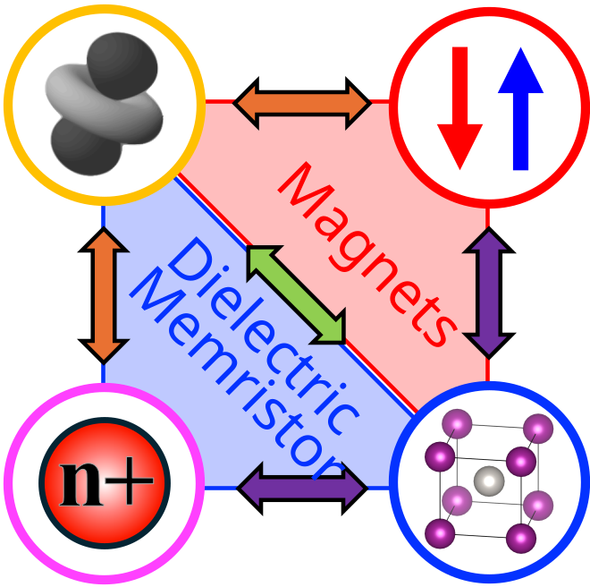
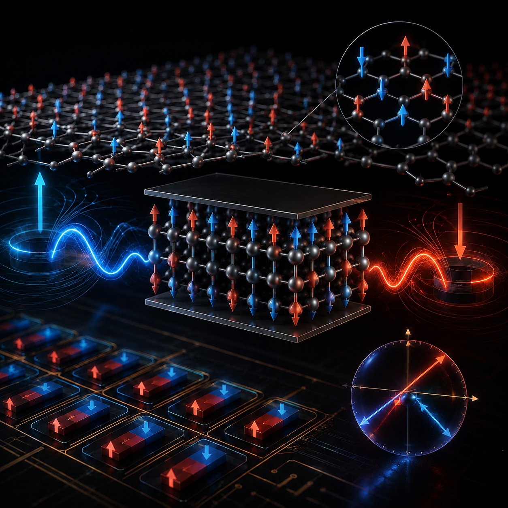
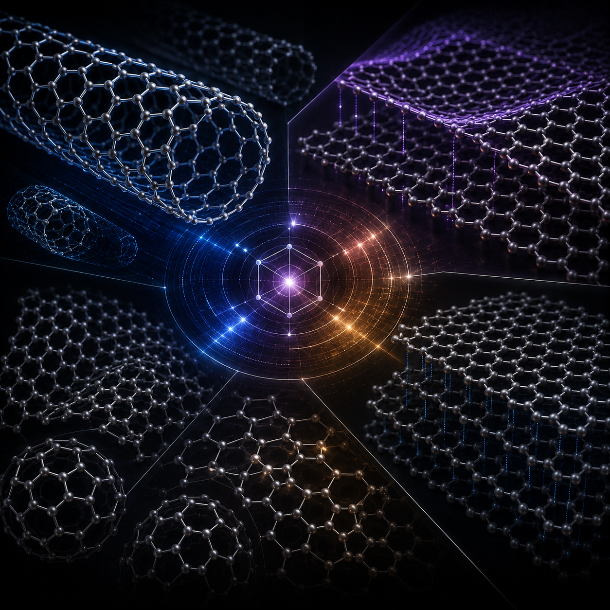
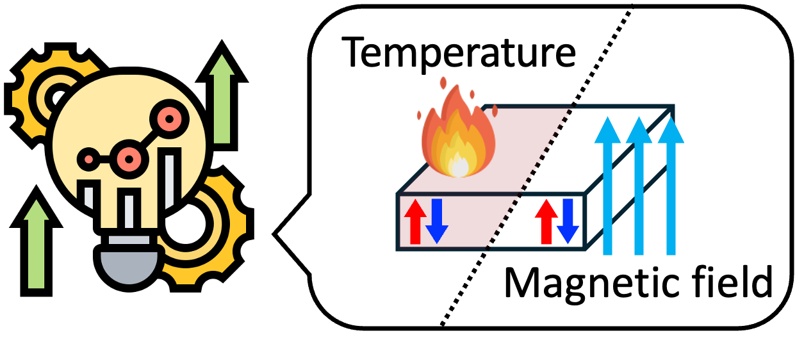
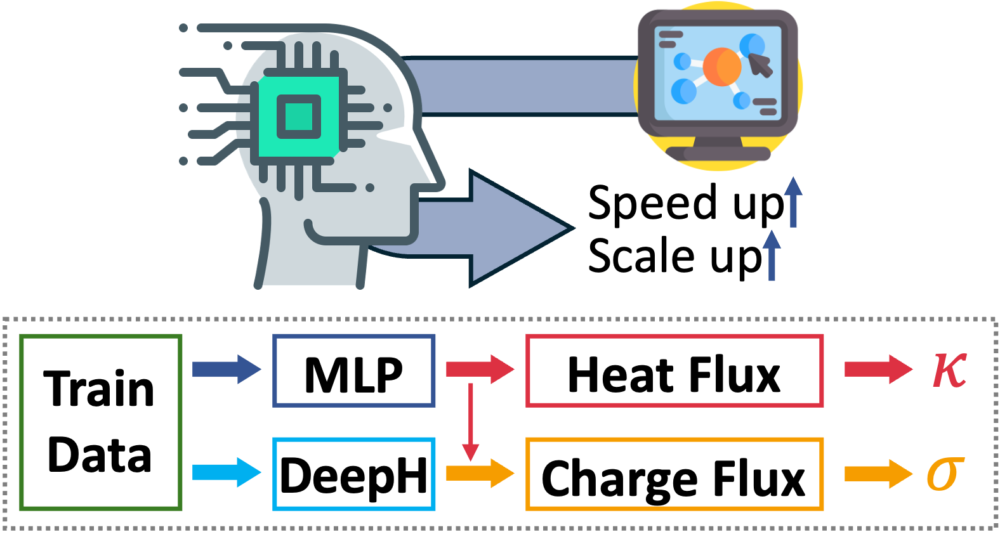
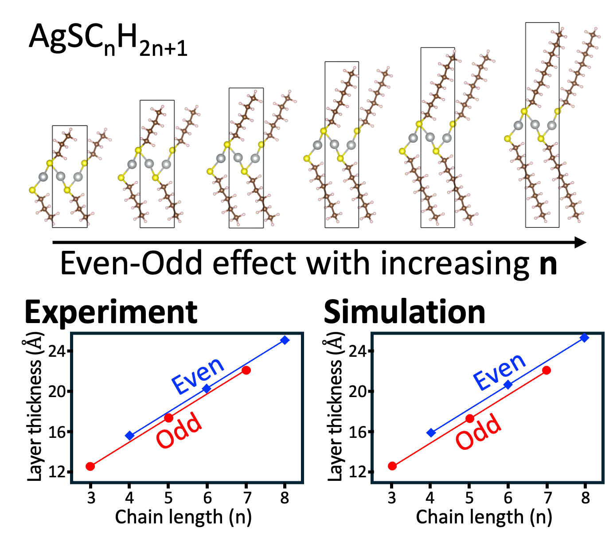
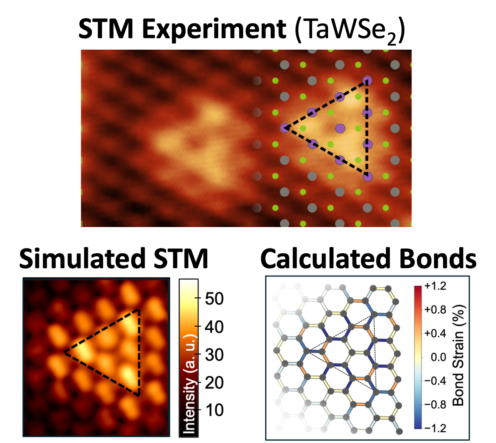
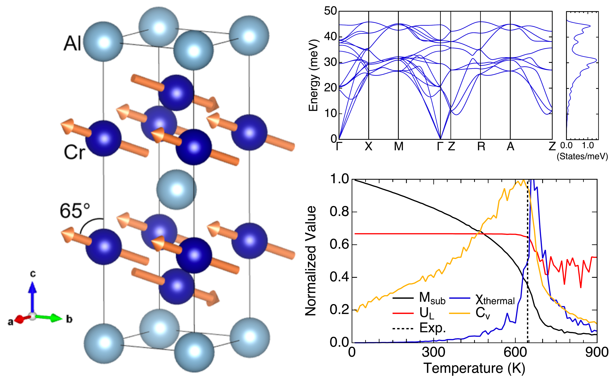
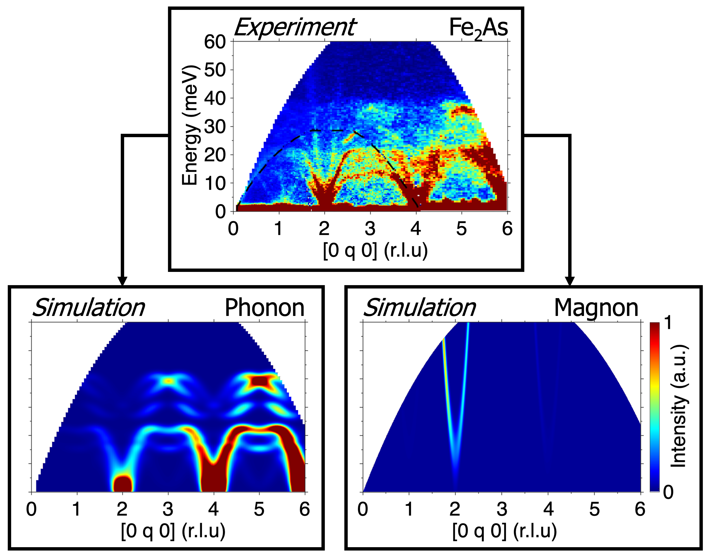
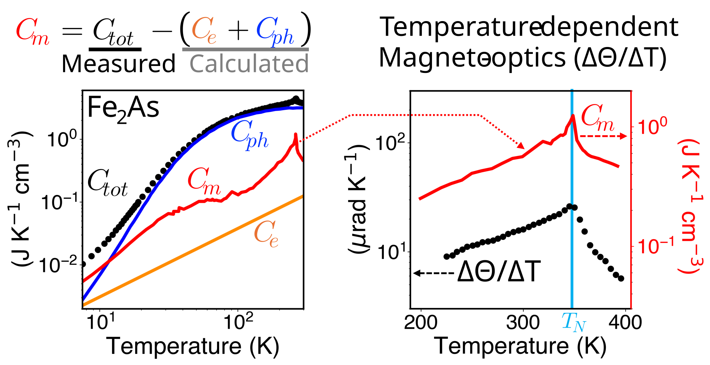

Transport전도현상
Predicting and engineering heat, charge, & ion transport in advanced materials
첨단 소재의 열, 전하, 이온 전도 특성에 대한 예측과 분석 및 제어 연구
We utilize AI-assisted computational materials science methodologies to analyze microscopic interactions at the atomic level in order to understand the emergent macroscopic properties of materials.
재료정보이론연구실은 전산재료과학 방법론과 소재 인공지능 도구를 통해 원자 단위의 미시적 상호작용을 분석하여 소재의 거시적 물성 현상을 이해하는 연구를 수행합니다.
Modern advanced materials are governed by coupled microscopic degrees of freedom. MINT Lab investigates how these interactions create macroscopic functionality and provide insights into their behavior and physical origins. MINT Lab's main methodology consists of computational materials science approaches with AI-Materials tools.
첨단 신소재는 전자, 격자, 스핀, 이온 등 다양한 미시적 상호작용에 의해 거시적 기능이 발현됩니다. 재료정보이론연구실은 이러한 상호작용이 어떻게 거시적 물성으로 이어지는지 탐구하여 그 거동 발현과 물리적 기원에 대한 통찰을 제공합니다. 재료정보이론연구실은 소재 인공지능 도구들과 전산재료 방법론을 활용하여 이러한 현상에 대한 연구를 수행합니다.

Our projects connect fundamental materials physics with computational design and AI-accelerated workflows.
Predicting and engineering heat, charge, & ion transport in advanced materials
첨단 소재의 열, 전하, 이온 전도 특성에 대한 예측과 분석 및 제어 연구

Understanding spin dynamics and magnetic interactions to uncover magnetic phenomena and enable next-generation magnetic applications
자성 물질의 스핀 역학과 자기 상호작용 분석을 통한 자기물성 이해 및 자성 응용 개발

Exploring diverse atomic structures, and their energetic impact on electronic, phonon, and magnon properties
구조 다양성이 소재의 전자, 격자(포논), 스핀(마그논) 물성에 미치는 영향 탐구

Developing first-principles computational methods to predict materials properties under applied magnetic field and temperature conditions

Building AI-assisted workflows that accelerate costly simulations, explore large materials spaces, and refine materials hypotheses through iterative feedback.

제일원리계산을 통해 Even-Odd Effect에 대한 재현 및 원자 수준의 물리적 근원 해석 제공
Z Ye, J Zhao, K Kang, et al., Advanced Optical Materials 13, 2570073 (2025).
DFT 기반 전자구조와 포논 계산을 통한 Multi-doping 효과 분석 및 고성능 열전 특성 분석
S Acharya†, S Park†, K Kang†, et al., Nano Energy 146, 111491 (2025).
DFT를 통해 TaWSe2에서 원자 클러스터링의 STM 재현 및 국소 자기모멘트 발현의 물리학적 원인 특정
NH Lam†, MN Huda†, K Kang†, et al., Advanced Functional Materials 35, 2507738 (2025).
금속 반강자성체 Cr2Al의 자기구조와 교환상호작용 규명을 통해 큐리온도 및 격자 안정성 확인 협업
C Zhao, K Kang, et al., Physical Review Materials 5, 084411 (2021).
DFT와 Linear Spin-wave Theory를 통한 Fe2As의 비탄성 중성자 산란 시그널 내 포논, 마그논 기여 구별
MH Karigerasi, K Kang, et al., Physical Review Materials 4, 114416 (2020).
반강자성체 Fe2As의 열용량 내 전자와 포논의 기여 계산을 통해 자성 열용량 추출 및 자기광학 효과와의 관계 해석
K Yang, K Kang, et al., Physical Review Materials 3, 124408 (2019).MINT Lab is looking for motivated graduate students interested in Computational Materials Science and AI-Materials! If you are passionate about research in related fields, please feel free to contact us via email.
재료정보이론연구실에서는 전산재료과학 및 소재인공지능을 활용한 다양한 신소재 연구에 대해 관심과 열의를 가진 대학원생을 모집하고 있습니다! 관련 분야에 관심이 있고 적극적으로 연구에 참여하고자 하는 학생들의 지원을 환영합니다. 관심 있는 학생은 이메일로 문의해 주시기 바랍니다.